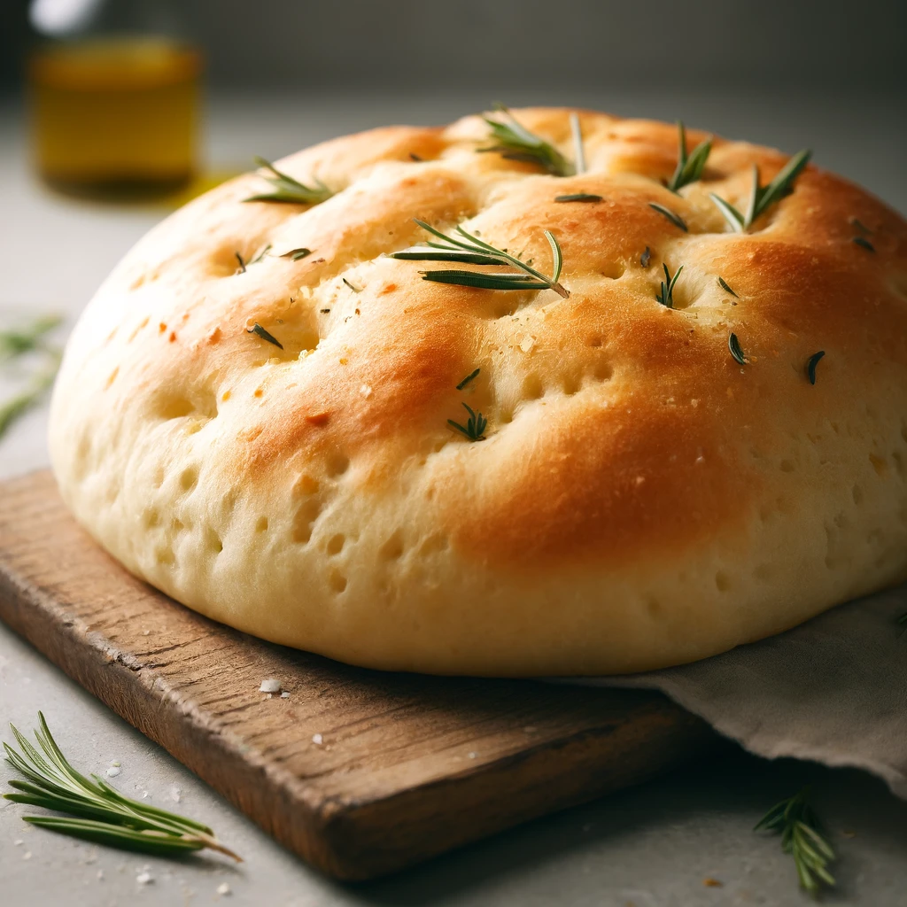

Rosemary Focaccia
Experience the irresistible aroma and flavor of our homemade rosemary focaccia. This golden,
fluffy loaf is crafted from scratch, infused with fresh rosemary, and topped with a delicate
sprinkle of sea salt. Perfect as an appetizer, side, or sandwich base, it’s a versatile
addition to any meal. This recipe yields one 9" x 13" loaf.
Preparation time
- Prep: 7 minutes
- Bake: 25 to 30 minutes
- Total: 2 hour, 32 minutes
Ingredients
Dough
- 420g Unbleached All Purpose Flour
- 340g Water
- 60g Olive oil, divided
- 8g Table salt
- 9g Instant yeast (one packet)
Toppings
- 7g Fresh rosemary, chopped
Experiment with different toppings! This recipe is flexible and the flavor of the bread
works well with a variety of flavors. Some potential substitues for fresh rosemary include:
- Everything bagel seasoning
- Cherry tomatoes
- Kosher salt
- Parmesan cheese
- Olives
- Sun-dried tomoatoes
Instructions
- Prepare the pan: Use non-stick vegetable oil spray to lightly grease a 9" x 13" pan. Drizzle about 2
tablespoons (25g) of the olive oil atop the spray
- Proof the yeast: Set aside some of the water and activate the yeast in the water with a pinch of
sugar or honey. You'll see when it's ready and it won't take long.
- Knead the dough: Combine the remaining 35g of olive oil with the rest of the dough ingredients. Knead for
five minutes by hand or with a mixer.
- First dough rise: Shape the dough into a ball and place it in a greased mixing bowl, and cover with a damp
towel. Let the dough rest for 45-60 minutes, or until it has doubled in size.
- Second dough rise: Scoop the dough into the prepared pan, cover it, and let it rise again at room
temperature for
30-60 minutes. During the second rise, preheat the oven to 375°F.
- Prepare the dough: Poke deep dents into the dough with your fingers all over the surface of the dough.
Drizzle
a tablespoon or two of olive oil evenly over the top of the dough and sprinkle evenly with the fresh
rosemary (and sea salt, optionally).
- Bake: Bake until the bread is golden brown, 25-30 minutes.
- Remove from oven: Wait 5 minutes before turning the loaf onto a rack.